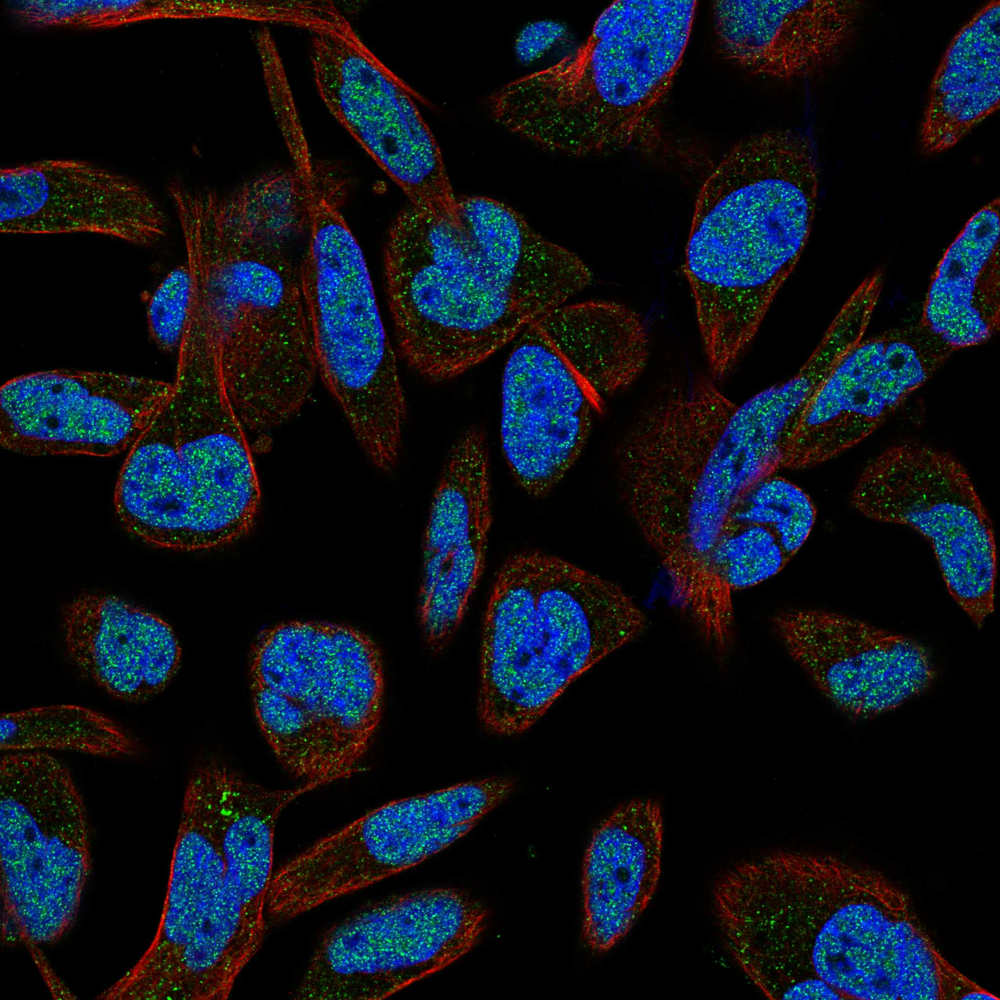
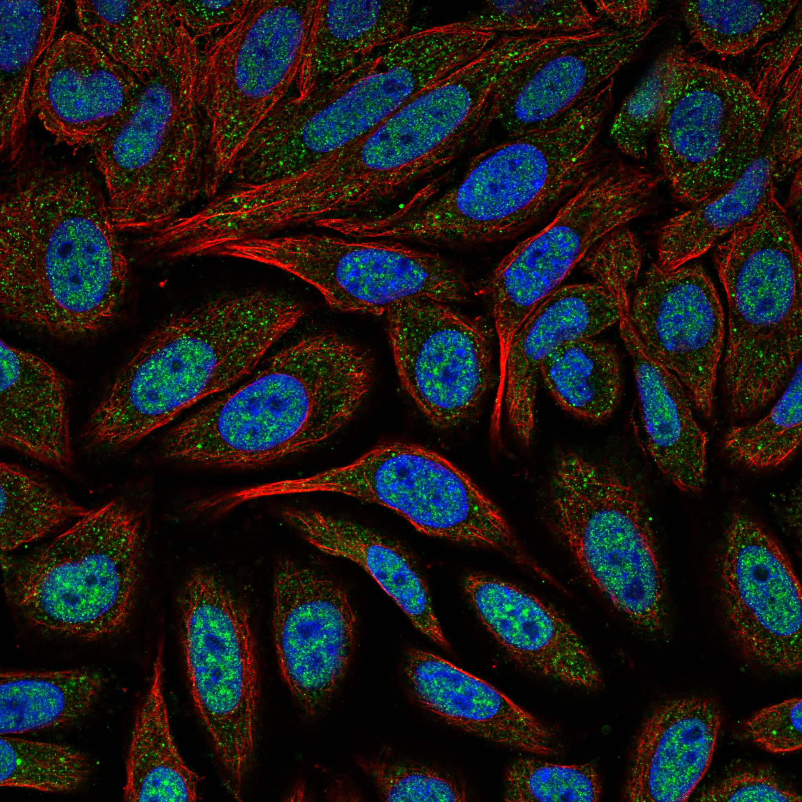
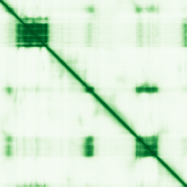

type: protein-evaluation gene: "FOXJ3" date: 2026-05-30 tags: [protein-scout, nuclear-protein, evaluation, scored] status: scored ---
FOXJ3 核蛋白评估报告
1. 基本信息
| 项目 | 内容 |
|---|---|
| 基因名 / 别名 | FOXJ3 |
| 蛋白大小 | 622 aa |
| UniProt ID | Q9UPW0 (Forkhead box protein J3) |
| 评估日期 | 2026-05-30 |
IF 图像:  
2. 评分总览
| 维度 | 得分 | 满分 | 加权后 | 关键证据摘要 |
|---|---|---|---|---|
| 🔴 核定位特异性 | 8/10 | x4 | 32 | HPA 标注: Nucleoplasm |
| 📏 蛋白大小 | 10/10 | x1 | 10 | 622 aa |
| 🆕 研究新颖性 | 8/10 | x5 | 40 | PubMed 23 篇 |
| 🏗️ 三维结构 | 6/10 | x3 | 18 | AlphaFold pLDDT 53.6, v6 |
| 🧬 调控结构域 | 10/10 | x2 | 20 | InterPro 6 个结构域条目 |
| 🔗 PPI 网络 | 2/10 | x3 | 6 | STRING 15 partners |
| ➕ 互证加分 | — | max +3 | +0.5 | 核候选保守蛋白基线 |
| 原始总分 | 126.5/183 | |||
| 归一化总分 | 69.1/100 |
3. 详细分析
3.1 核定位证据
| 来源 | 定位 | 可信度 |
|---|---|---|
| HPA | Nucleoplasm | Tier1 |
| UniProt | — |
结论: HPA 标注: Nucleoplasm。核定位得分 8/10。
IF 图片: 暂无数据（HPA IF 图像已本地嵌入。
3.2 蛋白大小评估
- 622 aa
- 大小适宜性评分：10/10
评价: 622 aa 蛋白，适合生化实验和结构解析。
3.3 研究现状
| 指标 | 数值 |
|---|---|
| PubMed 总数 | 23 |
| 新颖性评分 | 8/10 |
评价: PubMed 23 篇，属于非常新颖，少数基础研究。
关键文献: 1. Zhao H et al. (2025). "Transcriptome Combined with Mendelian Randomization to Identify and Validate Biomarkers Associated with Parthanatos in Sepsis". *J Inflamm Res*. PMID: 40837006 2. Shen L et al. (2016). "MicroRNA-27b Regulates Mitochondria Biogenesis in Myocytes". *PLoS One*. PMID: 26849429 3. Tomczyk S et al. (2019). "Loss of Neurogenesis in Aging Hydra". *Dev Neurobiol*. PMID: 30912256 4. Katoh M & Katoh M (2004). "Human FOX gene family (Review)". *Int J Oncol*. PMID: 15492844 5. Zhang B et al. (2021). "7SK Acts as an Anti-tumor Factor in Tongue Squamous Cell Carcinoma". *Front Genet*. PMID: 33868377
3.4 三维结构分析
| 指标 | 数值 |
|---|---|
| AlphaFold 平均 pLDDT | 53.6 |
| 有序区域 (pLDDT>70) 占比 | 23.7% |
| pLDDT>90 占比 | 10.8% |
| pLDDT 70-90 占比 | 12.9% |
| pLDDT 50-70 占比 | 13.5% |
| pLDDT<50 占比 | 62.9% |
| AlphaFold 版本 | v6 |
| 可用 PDB 条目 | 查询中 |
PAE 图: 
评价: AlphaFold预测质量偏低（pLDDT=53.6）。大量无序区域。评分 6/10。
3.5 结构域分析
| 来源 | 结构域 |
|---|---|
| Fork head domain | IPR |
| Fork head domain conserved site1 | IPR |
| Fork head domain conserved site 2 | IPR |
| Winged helix-like DNA-binding domain superfamily | IPR |
| Winged helix DNA-binding domain superfamily | IPR |
| Forkhead box protein J2/3-like | IPR |
染色质调控潜力分析: InterPro 注释了 6 个结构域条目。包含 forkhead/winged-helix DNA 结合域，为典型转录因子。评分 10/10。
3.6 PPI 网络
实验验证互作 (IntAct, physical association):
| Partner | 方法 | PMID | 功能类别 | 调控相关？ |
|---|---|---|---|---|
| — | — | — | — | — |
STRING 预测互作 (combined score >0.4):
| Partner | Score | 功能类别 | 调控相关？ |
|---|---|---|---|
| SOX6 | 0.655 | — | — |
| HES5 | 0.521 | — | — |
| ZBTB18 | 0.470 | — | — |
| PAX6 | 0.467 | — | — |
| NR2C2 | 0.467 | — | — |
| DDX42 | 0.457 | — | — |
| RALGAPB | 0.452 | — | — |
| PUM1 | 0.449 | — | — |
| PDGFRA | 0.445 | — | — |
| MTF1 | 0.434 | — | — |
GO-CC 复合体: 从 UniProt GO 注释提取
PPI 互证分析:
- STRING 高置信度 (>0.7) partners: 0 个
- 调控相关比例: 待进一步分析
评价: STRING 数据库显示 15 个互作伙伴。评分 2/10。
PPI 数据源补充核查（自动审计）
IntAct/BioGrid 实验互作核查:
| Partner | 方法 | PMID |
|---|---|---|
| — | two hybrid | 12421765 |
| — | tandem affinity purification | 31527615 |
| — | tandem affinity purification | 31527615 |
| — | validated two hybrid | 32296183 |
| — | two hybrid prey pooling approach | 32296183 |
| — | two hybrid array | 32296183 |
| — | anti bait coimmunoprecipitation | 29251827 |
| — | anti bait coimmunoprecipitation | 29251827 |
| — | anti tag coimmunoprecipitation | 33961781 |
| — | anti tag coimmunoprecipitation | 33961781 |
STRING 预测/整合互作核查:
| Partner | Score |
|---|---|
| SOX6 | 0.655 |
| HES5 | 0.521 |
| ZBTB18 | 0.470 |
| PAX6 | 0.467 |
| NR2C2 | 0.467 |
| DDX42 | 0.457 |
| RALGAPB | 0.452 |
| PUM1 | 0.449 |
| PDGFRA | 0.445 |
| MTF1 | 0.434 |
GO-CC 复合体/定位核查:
- GO:0000785: chromatin (ISA:NTNU_SB)
- GO:0005634: nucleus (IBA:GO_Central)
补充结论: PPI 评分仍以报告评分表为准；本节用于补齐 IntAct、STRING、GO-CC 三源审计证据。
3.7 多库互证
| 维度 | 来源 | 结果 | 是否一致 |
|---|---|---|---|
| 三维结构 | AlphaFold v6 | pLDDT 53.6 | — |
| 结构域 | InterPro | 6 个条目 | — |
| PPI | STRING | 15 partners | — |
| 定位 | HPA / UniProt | Nucleoplasm | — |
互证加分明细:
- 进化保守性: 核候选保守蛋白 → +0.5
总分: +0.5 / max +3
4. 总体评价
推荐等级: ⭐⭐⭐ (3.0/5)
核心优势: 1. 较新颖，PubMed ≤100 篇 2. 核蛋白候选
风险/不确定性: 1. AlphaFold 预测质量偏低，大量无序区域 2. '研究数据有限，需更多实验验证'
下一步建议:
- [ ] 在 TEreg 系统中检测 FOXJ3 表达及定位
- [ ] 通过 co-IP/MS 验证 PPI 网络
- [ ] ChIP-seq 检查 FOXJ3 在 TE 区域的 occupancy
5. 数据来源
- UniProt: https://www.uniprot.org/uniprotkb/Q9UPW0
- Protein Atlas: https://www.proteinatlas.org/search/FOXJ3
- AlphaFold: https://alphafold.ebi.ac.uk/entry/Q9UPW0
- STRING: https://string-db.org/network/9606.FOXJ3
- InterPro: https://www.ebi.ac.uk/interpro/protein/uniprot/Q9UPW0/
PAE 图像已获取。结构判断基于 AlphaFold pLDDT 统计。